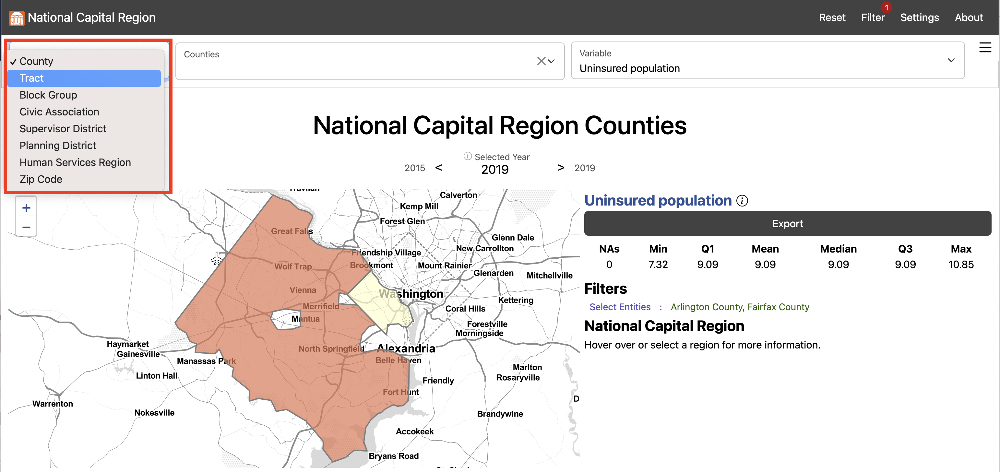
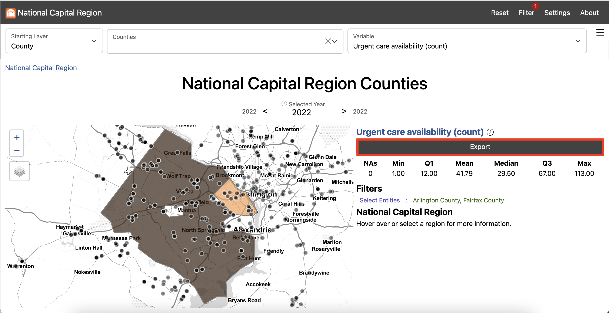

Food Insecurity
How do we measure food insecurity in Fairfax County?
The current measure of food insecurity, the USDA Current Population Survey Food Security Supplement, monitors food insecurity over time at national and state levels. Our stakeholders, local governments and nonprofits, want food insecurity measures at a smaller geographic level. Such knowledge would permit local officials to better address the problem in identifiable small geographies with targeted outreach and mitigation strategies, such as nutrition education and social service referrals.
We accomplish this by modeling food insecurity as a function of household income, size, composition, and the census tract where the household resides and categorize a household as food insecure, at-risk of food insecurity, or food secure using the cost-of-living as the threshold.
We define the cost-of-living as the amount of income necessary to pay federal and state income taxes and to meet a household’s needs to function at a modest yet adequate standard of living. We include “living” in our designation to connect this to the “living wage” and to distinguish that the cost-of-living is not set at a deprivation level. Instead, it is a budget that could be used to define a living wage. We reviewed the following calculators to build a sense of the existing solutions to tackle defining a cost-of-living.
- The Living Wage Calculator from Massachusetts Institute of Technology
- The Family Budget Calculator from Economic Policy Institute
- The Self Sufficiency Standard from Washington University’s Center for Women’s Welfare.
We found that the available cost of living calculators did not meet our need detail at the sub-county level. To construct a sub-county cost of living, we completed a data discovery to find available sources for budget categories available at a geographically granular level and replicable across the National Capital Region. The basic needs include housing, food, transportation, healthcare, childcare, broadband, and other necessities such as clothing, household supplies, personal care, nonprescription medicine, and school supplies. The household income standard estimates are a function of family size and composition and where the family resides. It assumes the total cost of each need without government subsidies (e.g., public housing, Medicaid, or childcare assistance); or nonprofit or informal assistance from family and friends (e.g., unpaid childcare by a relative, food from food banks, or shared housing). An cost-of-living budget was calculated for every household combination within a census tract. The data sources used to construct the budget are listed in the table below.
To estimate the food insecurity at the census tract level using the cost-of-living as the threshold, we used household data at the Public Use Microdata Area (PUMA) level and aggregated household income and size data at the census tract level from the American Community Survey (ACS). Iterative proportional fitting (IPF) was used to estimate the number of households in each income by size category within a census tract (see Exhibit 2) subject to constraints from known and fixed marginal row and column totals.12 The marginal row and column totals are household income , ACS Table S1901, and household size, ACS Table B11016, at the census tract level. For each census tract the procedure was:
- fill the body of the table (Exhibit 2, Panel 2) with starting values (seeds) which were adjusted iteratively to match the row and column marginal totals;
- the cells in each row were adjusted by multiplying each cell by the
ratio of the (fixed row marginal / actual row sum);
- the cells in each column were adjusted by multiplying each cell by
the ratio of the (fixed column marginal / actual column sum);
Iterations between (2) and (3) were performed until the stop criterion was reached, either when the difference between iterations was less than 10-11 or the number of iterations reach 1,000. The estimates for census tract 450100 as displayed in Exhibit 2, Panel 2. For example, there will be 135 two person households with an income in the range [75,000 to 99,999] for census tract 450100. For Fairfax County, 274 2-way tables were estimated each with 45 cells. All computations were done using the R-package for Multidimensional Array Fitting (mipfp).3
A monthly cost-of-living midpoint was calculated for each household size by income category (each cell in the census track table). The midpoint was then compared to the limits of the income category to classify all the households within a cell as secure, insecure, at-risk households. For each cell:
- calculate the cell threshold by summing seven components of the cost-of-living excluding food costs (transportation, healthcare, childcare, housing, broadband, other expenses, and taxes) for each household combination of a particular household size and taking the midpoint;
- estimate the food budget range for a cell as the difference between
the cell threshold minus lower end and the cell threshold minus upper
end of the income category;
- calculate the monthly food costs for the household size by using the USDA monthly low-cost food plan;
- compare the USDA monthly food cost to the food budget range, if the USDA monthly food cost is less than the lower end of the food budget range the household is food secure; if the USDA monthly food cost is greater than the upper end of the food budget range the household is food insecure; if the USDA monthly food cost is contained within the range the household is at risk.

Feeding America, accessed 2022
U.S. Department of Housing and Urban Development, accessed 2022
Center for Neighborhood Technology, accessed 2022
Health Insurance Market Place, accessed 2022
Department of Labor Women’s Bureau National, accessed 2022
BroadbandNow, accessed 2022
National Academy of Sciences accessed 2022
National Bureau of Economic Research’s program TAXSIM Version 35, accessed 2022
Explore this measure on our dashboard
Applying our methodology, we can explore food insecurity at the census tract level in Fairfax County. We find that the estimated percentage of households facing food insecurity in Fairfax is 20 percent. This estimate is within the margin of error of the food insecurity estimate from the survey conducted by the National Opinion Research Center at the University of Chicago in 2022 for the Capital Area Food Bank. Within the county, Census tracts are at a minimum 0 percent food insecure and at a maximum 58 percent food insecure.
Census tracts with the highest percentage of the population estimated to be food insecure include southern Fairfax near Alexandria along Route 1, North Springfield, Merrifield, along Leesburg Pike near southern Arlington, western Fairfax near Dulles, and western Herndon.

Feeding America, accessed 2022
U.S. Department of Housing and Urban Development, accessed 2022
Center for Neighborhood Technology, accessed 2022
Health Insurance Market Place, accessed 2022
Department of Labor Women’s Bureau National, accessed 2022
BroadbandNow, accessed 2022
National Academy of Sciences accessed 2022
National Bureau of Economic Research’s program TAXSIM Version 35, accessed 2022
Explore this measure on our dashboard
Our methodology distinguishes households that are in an ambiguous position of being food secure: they are at-risk for food insecurity. Across Fairfax overall, 26 percent of households are at-risk of facing food insecurity.

Explore these measures on our dashboard
Steps to replicate this map
- Click “Filter” in the top left navigation bar to open the Filter Window
- In the Filter Window under “county” select “Arlington County” and “Fairfax County”
- Exit the Filter Window
- In the Starting Layer Menu, Select “Tract” #
-
In the Settings Menu under Summary Level select “Selected Super-Region”
#

-
Scroll down to Map Options and input “2” for Outline Weight and “3” for
Background Outline Weight #

- Exit the Settings Menu
- In the Variable Menu, select Asian American/Pacific Islander population under Demographics
- In the Variable Menu, select Black population under Demographics
- In the Variable Menu, select Hispanic/Latino population under Demographics
- In the Variable Menu, select White population under Demographics
- Click Export to open the Export Window and select Download to download the data locally #
When we overlay patterns of food insecurity with demographics, we can see patterns in the burden of food insecurity. We see that southern Fairfax near Alexandria along Route 1, which is disproportionately food insecure, has a higher Black population as well as Hispanic/Latino population. Similarly, North Springfield, and Leesburg Pike near southern Arlington also have a higher Black population as well as Hispanic/Latino population. Merrifield, western Fairfax near Dulles, and western Herndon, which experience higher than average food insecurity, have a higher than average Asian American/Pacific Islander population.
Looking towards the at-risk population, which is concentrated in Great Falls and McLean, we see that these areas are made up of predominately White as well as Asian American/Pacific Islander populations.
Read more about the Supplemental Nutrition Assistance Program (SNAP) in Fairfax County on the analysis page.
When we add SNAP access to our model, the percentage of households facing food insecurity falls to 19 percent. The minimum percentage of food insecure population in a Census tract is 0 percent and the maximum is 55 percent. The percentage of at-risk households is a mean of 16.7 in Census tracts, with a minimum of 16.7 percent and a maximum of 100 percent.
Note: If you find that the Social Impact Data Commons isn’t displaying data properly, you may need to clear the dashboard settings (from the Settings Menu) or clear your browser cache. Please contact us if you have other issues.
Sponsored by 
|
| Project Contact: Aaron Schroeder, ads7fg@virginia.edu |
Beckman, R. J., Baggerly, K. A., & McKay, M. D. (1996). Creating synthetic baseline populations. Transportation Research Part A: Policy and Practice, 30(6), 415-429.↩︎
Deming, W. E., & Stephan, F. F. (1940). On a least squares adjustment of a sampled frequency table when the expected marginal totals are known. The Annals of Mathematical Statistics, 11(4), 427-444.↩︎
Barthélemy, J. and Suesse, T. (2018). “mipfp: An R Package for Multidimensional Array Fitting and Simulating Multivariate Bernoulli Distributions.” Journal of Statistical Software, Code Snippets, 86(2), 1–20. doi:10.18637/jss.v086.c02.↩︎